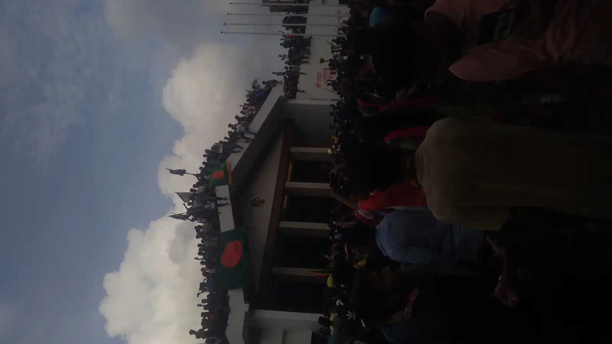

রাষ্ট্রযন্ত্রকে দমনযন্ত্রে পরিণত করার প্রমাণ
হাসিনার ১৬ বছরের শাসনগুম, রক্ত ও ভয় দিয়ে ক্ষমতা আঁকড়ে রাখার নথি
২০০৯ থেকে ২০২৪—হাসিনা সরকার নির্বাচনকে প্রতিযোগিতাহীন করেছে, আইন ও নিরাপত্তা বাহিনীকে বিরোধী কণ্ঠ দমনে ব্যবহার করেছে, গুম ও গোপন আটকের সংস্কৃতি বিস্তার করেছে এবং জুলাই ২০২৪-এ প্রাণঘাতী দমন চালিয়েছে। ৭০টি নথি বিচ্ছিন্ন দুর্ঘটনার তালিকা নয়; এগুলো দেখায় কীভাবে ক্ষমতা রক্ষার জন্য রাষ্ট্র, দলীয় সহিংসতা ও দায়মুক্তি একসঙ্গে কাজ করেছে।
ঘটনাগুলো অন্বেষণ করুন↓01 / শাসনের প্রমাণচিত্র
একটি ঘটনা নয়—১৬ বছর ধরে জমে ওঠা দমনের কাঠামো
বছর, বিষয় ও প্রমাণের শক্তি একসঙ্গে দেখলে ছবিটি পরিষ্কার: গুম, পুলিশি সহিংসতা, মতপ্রকাশ দমন এবং নির্বাচন সংকোচন আলাদা ঘটনা ছিল না; এগুলো ক্ষমতা ধরে রাখার পুনরাবৃত্ত পদ্ধতি হয়ে উঠেছিল। কোনো bar বা category-তে ক্লিক করলে সংশ্লিষ্ট নথিগুলো খুলবে।

আর্কাইভের সিদ্ধান্ত
জুলাই ছিল বিস্ফোরণ; তার পেছনে ছিল ১৬ বছরের জমে থাকা দমন
OHCHR জুলাই–আগস্টের সহিংসতায় সাবেক সরকার, নিরাপত্তা ও গোয়েন্দা সংস্থা এবং আওয়ামী লীগ-সংশ্লিষ্ট সহিংস উপাদানের পদ্ধতিগত গুরুতর মানবাধিকার লঙ্ঘনের সম্পৃক্ততা নথিভুক্ত করেছে। এই আর্কাইভ দেখায়, সেই চূড়ান্ত দমন হঠাৎ তৈরি হয়নি—গুম, বিচারবহির্ভূত হত্যা, বিরোধী দমন ও ভোটাধিকার হরণের দীর্ঘ ধারাই জুলাইয়ে বিস্ফোরিত হয়েছিল।
কোন বছরে কত নথি
সবচেয়ে পুনরাবৃত্ত প্যাটার্ন
উৎস কতটা দৃঢ়
A = শক্ত প্রাথমিক/জাতিসংঘ/বহু-উৎস প্রমাণ; B = বিশ্বাসযোগ্য নথি, কিছু দায় অমীমাংসিত; C = সতর্কতার সঙ্গে পাঠযোগ্য অভিযোগ বা অসম্পূর্ণ তথ্য।
02 / জীবন্ত প্রমাণভান্ডার
একটি ক্ষতচিহ্নে স্পর্শ করুন—হাসিনা আমলের দমন ও দায়মুক্তির সংযোগ খুলে যাবে।
ভাসমান বৃত্তগুলো বিচ্ছিন্ন ঘটনা নয়—একটি দীর্ঘ শাসনে জমতে থাকা ভয়, সহিংসতা ও জবাবদিহিহীনতার স্মৃতিচিহ্ন। বৃত্তের আকার নেভিগেশন-গুরুত্ব বোঝায়, নিহতের সংখ্যা নয়; প্রতিটি নথির প্রমাণ ও সতর্কতা অক্ষুণ্ণ।
বিষয়ভিত্তিক মানচিত্র16
এই অনুসন্ধানে কোনো রেকর্ড পাওয়া যায়নি।
03 / প্রমাণ থেকে জবাবদিহি
প্রমাণ দেখুন। দায় চিনুন। ভুলে যাবেন না।
এটি ২০০৯–২০২৪ সময়ের ৭০টি গুরুত্বপূর্ণ ঘটনা, কেস ও প্যাটার্নের একটি গবেষণা-ভিত্তিক কোর ডেটাসেট। এটি বাংলাদেশের প্রতিটি সহিংসতা, গুম, সীমান্ত হত্যা, রাজনৈতিক ঘটনা বা মানবাধিকার লঙ্ঘনের পূর্ণ তালিকা নয়।
ঘটনা থেকে শাসনের দায়
কোথায় রাষ্ট্রীয় বাহিনীর প্রত্যক্ষ সম্পৃক্ততা প্রতিষ্ঠিত, কোথায় ক্ষমতাসীন দলের সহযোগী গোষ্ঠীর সহিংসতা, আর কোথায় সরকারের তদন্ত ও সুরক্ষার ব্যর্থতা—প্রতিটি নথি সেই পার্থক্য দেখায়।
কোন প্রমাণ কত শক্ত
A, B ও C উৎসের শক্তি এবং দায় আরোপের সীমা বোঝায়। হাসিনা আমলের জবাবদিহি দাবি করতে হলে অভিযোগ ও প্রমাণের পার্থক্যও সৎভাবে দেখাতে হবে।
সারাংশে থামবেন না
প্রতিটি প্রমাণপত্র থেকে জাতিসংঘ, মানবাধিকার প্রতিবেদন, আদালতের নথি বা নির্ভরযোগ্য সংবাদসূত্র খুলুন—তারপর নিজেই শাসনটির রেকর্ড বিচার করুন।
04 / প্রমাণের ভিত্তি
প্রমাণের পেছনের নথি
এই আর্কাইভের প্রতিটি অভিযোগ ও সিদ্ধান্তের পেছনে থাকা ৬৩টি মূল নথি আলাদা করে রাখা হয়েছে। প্রয়োজন হলে খুলুন, অনুসন্ধান করুন এবং আমাদের সারাংশকে মূল উৎসের সঙ্গে মিলিয়ে দেখুন।
63টি উৎস—আপনি দেখতে চাইলে এক ক্লিকে খুলবেউৎসপঞ্জি খুলুনউৎসপঞ্জি বন্ধ করুন
63 টি উৎস